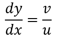
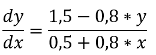
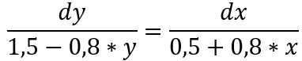
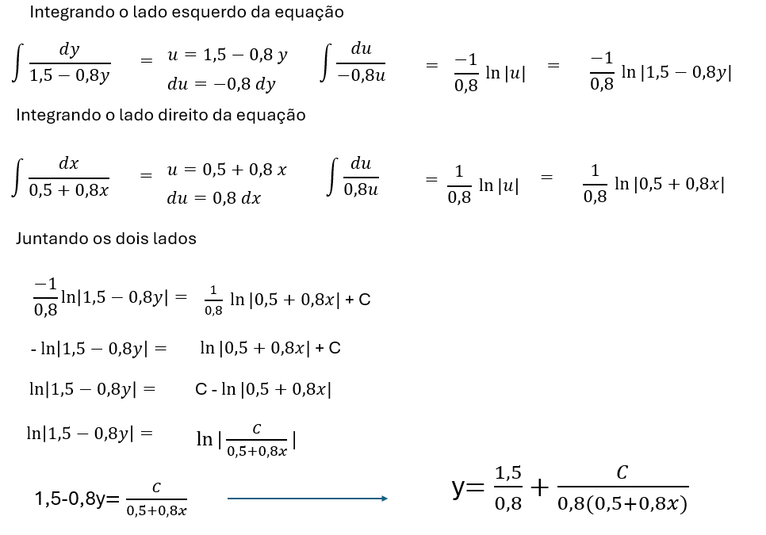
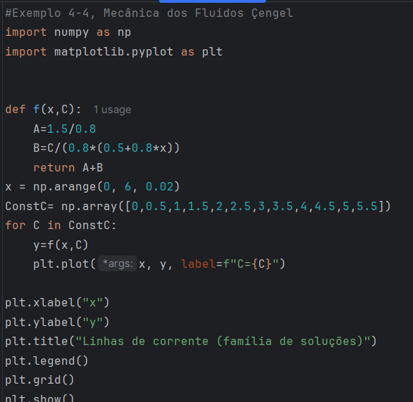
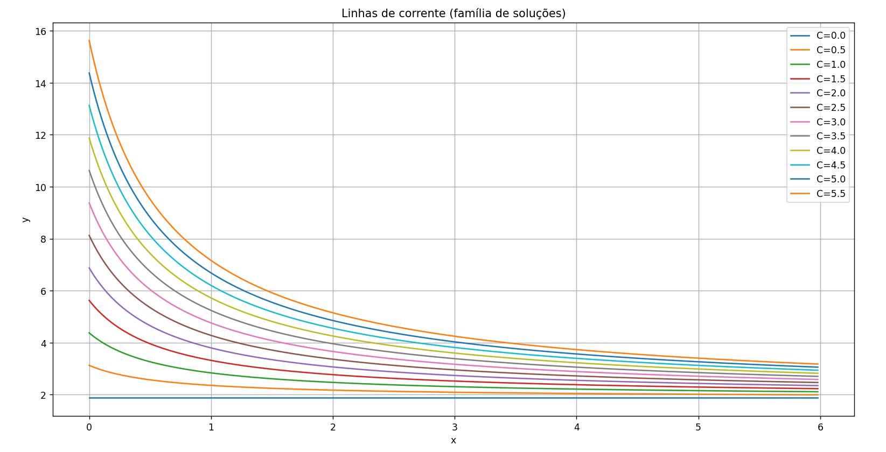
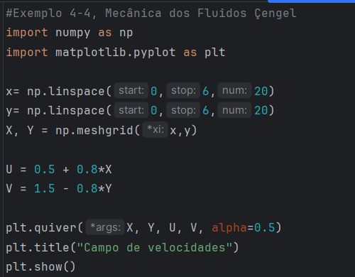
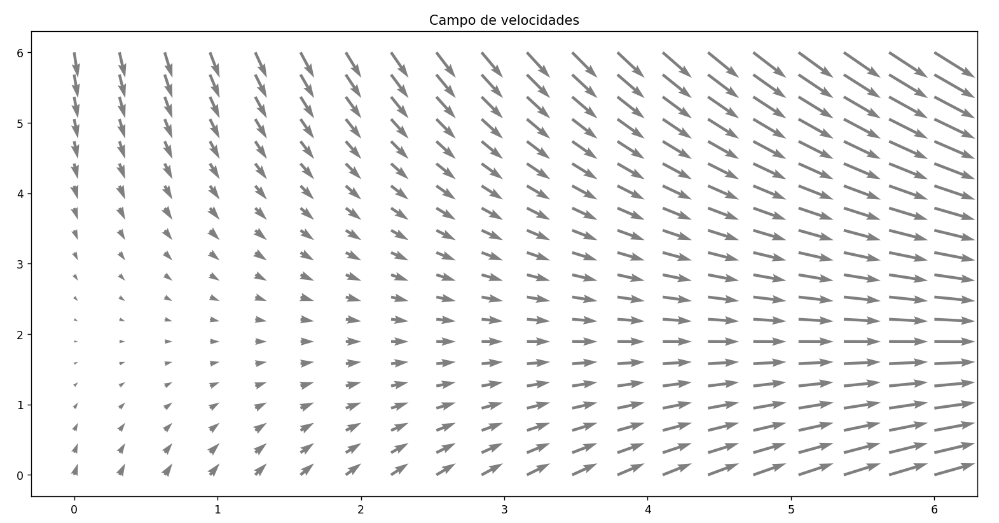

Essa postagem se propõe a apresentar uma solução para o exemplo 4.4 da página 113 do livro Mecânica os Fluidos - Fundamentos e Aplicações de Yunus Çengel. Nesse exemplo, é solicitado que se plote o gráfico das linhas de corrente para um dado escoamento bidimensional, incompressível e estacionário com campo de velocidades conhecido.
Uma linha de corrente é um a curva que é tangente em todos os pontos ao vetor velocidade local instantâneo. Sendo conhecido o campo de velocidades v= u i+ v j, para se obter as linhas de corrente, é necessário integrar a equação apresentada abaixo :

O campo de velocidades do escoamento é o seguinte : v= 0,5+0,8x i+ 1,5-0,8y j. A equação diferencial a ser resolvida é apresentada na Figura 2.

Essa é uma EDO separável, que pode ser reescrita na forma abaixo e ser resolvida pelos procedimentos algébricos apresentado na Figura 4.


A equação apresentada na Figura 4 é a equação da linha de corrente. A constante de integração C irá assumir diversos valores para se obter as linhas de corrente.
Para plotagem das linhas de corrente, os comandos necessários são apresentados na Figura 5. O função f(x)= 1,5/0,8 + C/(0,8*(0,5+0,8x)) deve ser plotada para cada valor de C. Dessa forma, foi feito uma laço for para variar os valores da variável C, sendo avaliada a função f(x) para cada valor de C.

Na Figura 6 temos o gráfico das linhas de corrente para valores de C positivos e x positivo. O gráfico está de acordo com o exemplo 4.4 do livro Mecânica dos Fluidos - Fundamentos e Aplicações.

Além das linhas de corrente, às vezes é necessário plotar os vetores do campo de velocidade. Os comandos essa plotagem se encontram na Figura 7 . Para esse gráfico, Python tem ferramentas apropriadas como o meshgrid e o plt.quiver. O meshgrid discretiza o domínio fazendo para ordenados de x e y sobre todo domínio. Depois esses pares ordenados são usados para calcular os valores dos vetores U e V. E, com o comando quiver os vetores são plotados por todo domínio que foi discretizado. O campo de velocidades é apresentado na Figura 8.


Desenvolvimento : Química Programada